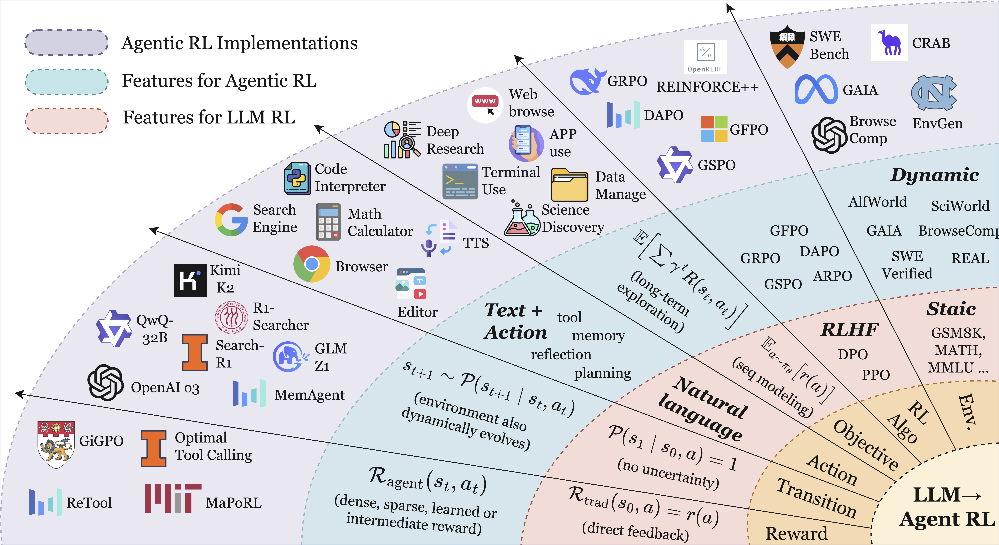
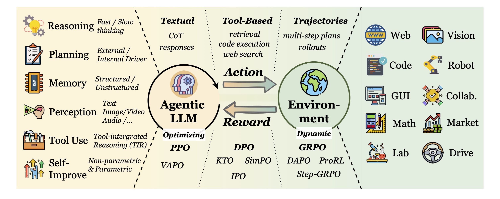
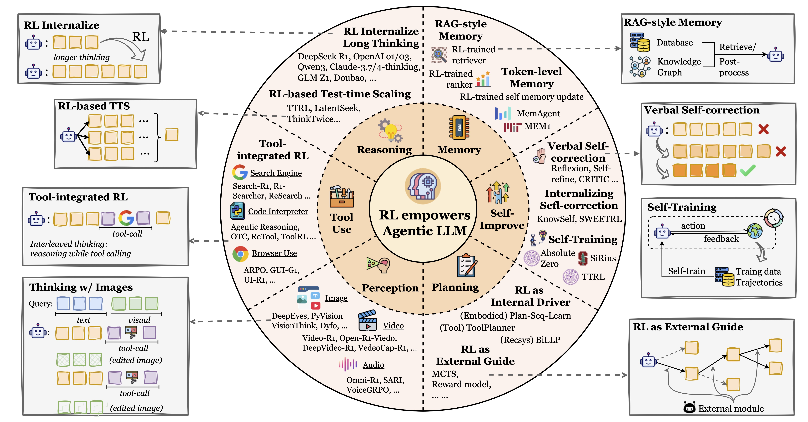
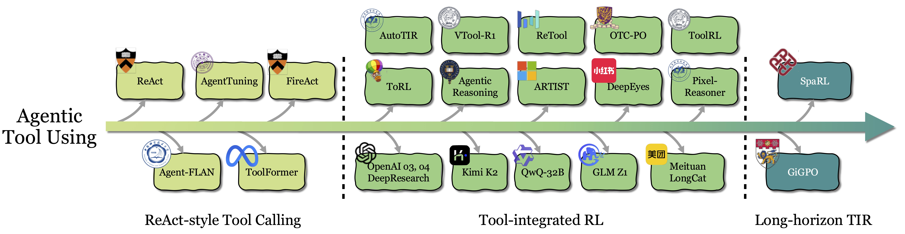
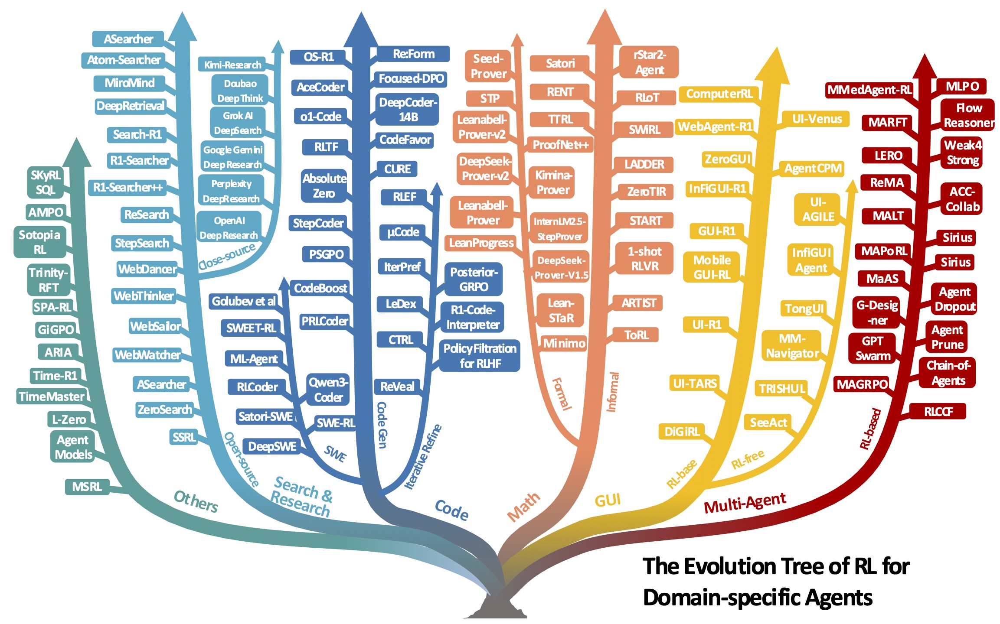
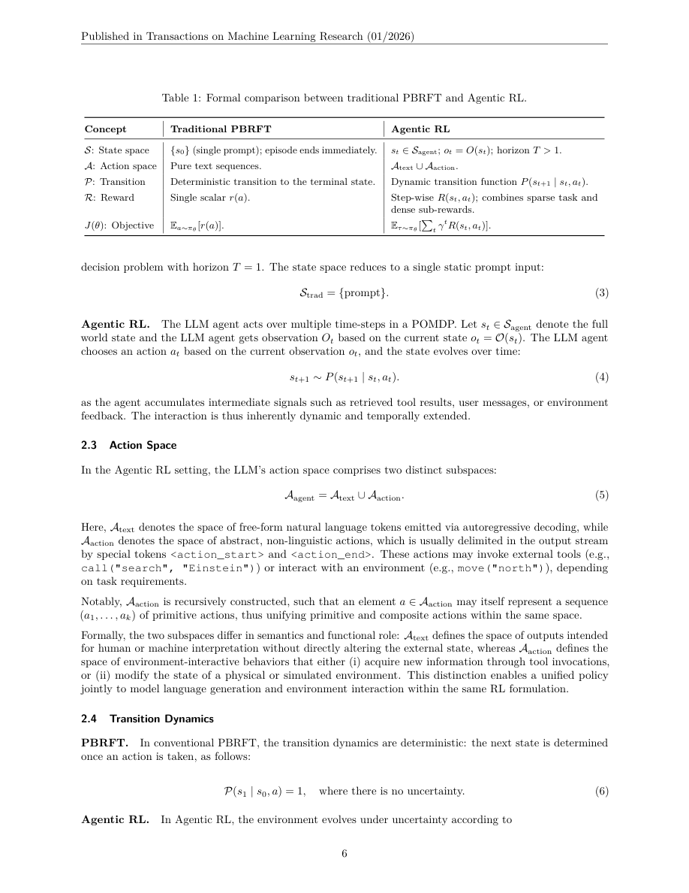
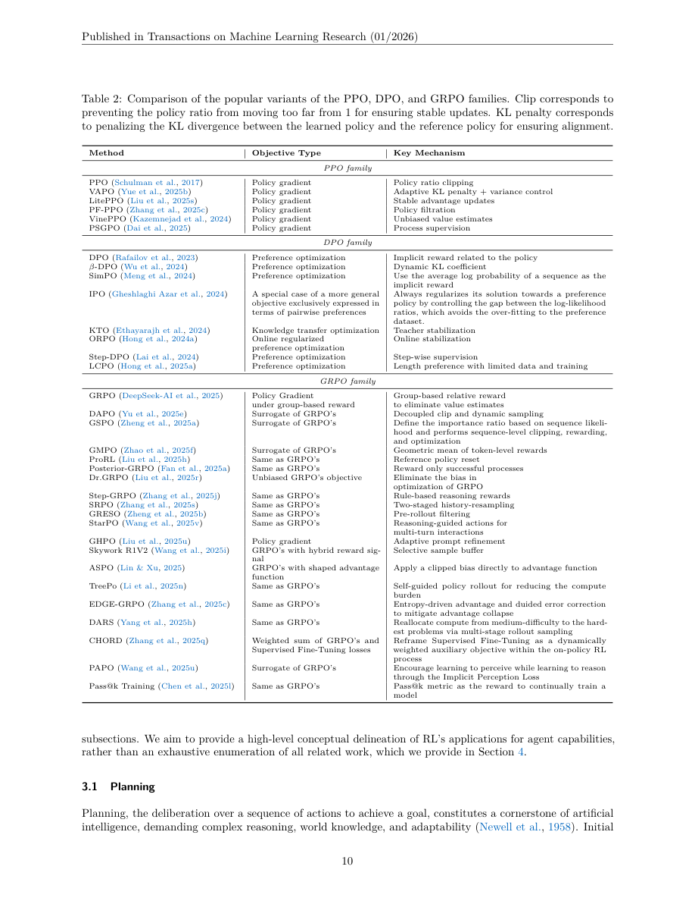
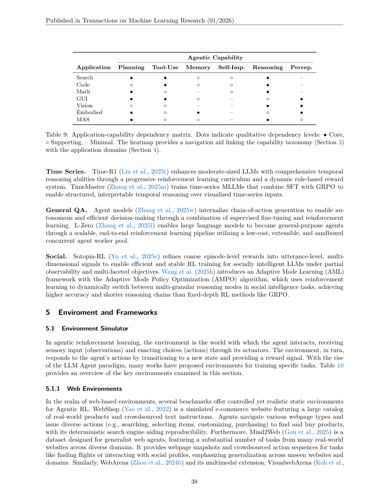
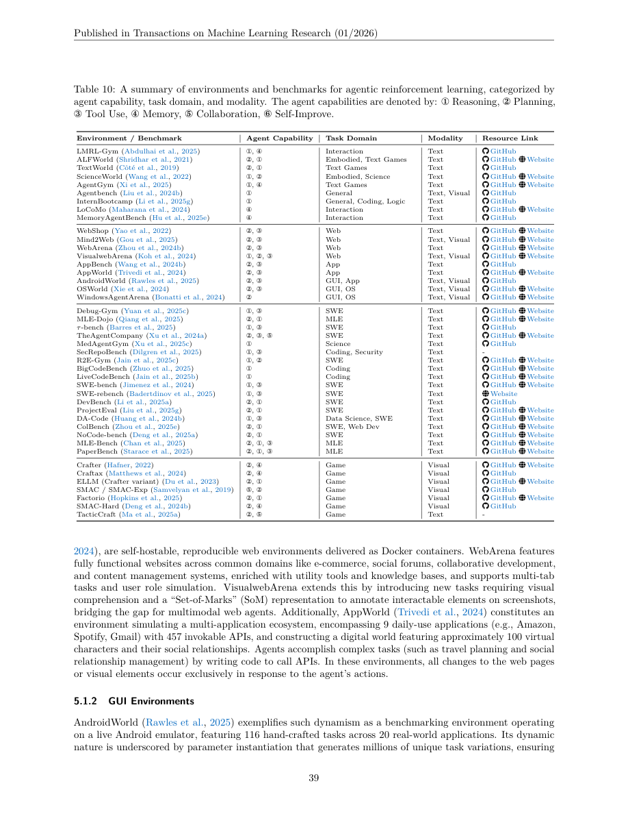
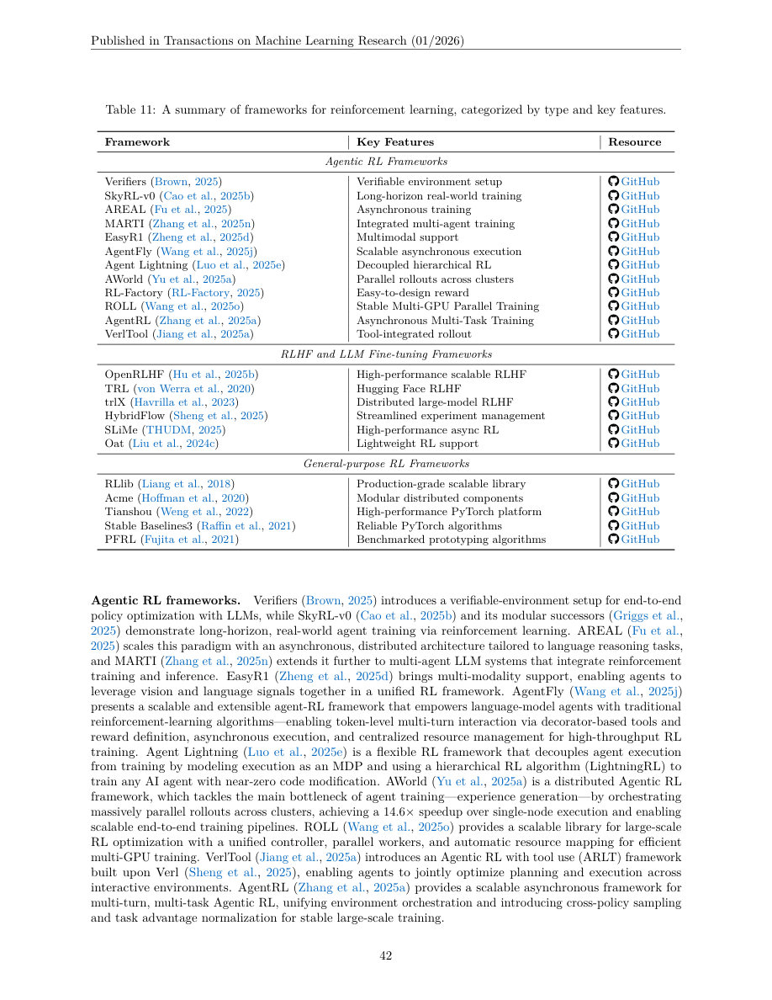

The Landscape of Agentic Reinforcement Learning for LLMs: A Survey
这篇 survey 的核心贡献不是提出一个新 RL 算法，而是把 Agentic RL 从普通 LLM RL 中切出来：普通 PBRFT 更像 $T=1$ 的单步文本优化，Agentic RL 则把 LLM 作为嵌入动态环境的 policy，在部分可观测、多步交互、工具调用、记忆、规划和反馈循环中学习。
研究动机：为什么需要单独讨论 Agentic RL
论文认为，RLHF、DPO、GRPO 等常见 LLM RL 传统上多优化“一次回答”的质量；但真实 agent 需要在环境里反复观察、计划、调用工具、更新记忆、处理失败并继续行动。把这两类问题都叫 LLM RL 会掩盖状态、动作、奖励、时间尺度和评估协议上的根本差异。
概念边界
PBRFT 的输入通常是固定 prompt 或偏好样本，训练目标是让最终文本更符合偏好或 verifier。Agentic RL 的输入是环境观测，输出既包含文本，也包含工具调用、GUI 操作、检索、代码执行或多 agent 通信。
研究缺口
已有 survey 分别覆盖 LLM alignment、LLM agent 或 LLM for RL，但缺少一个统一视角解释 RL 如何把 agent 组件从 handcrafted module 变成可优化 policy。
读法提醒
这篇论文是地图型综述，不应按“方法-实验-SOTA”单篇论文来读。更有价值的读法是抽取定义、分类法、benchmark/framework 清单，以及每个方向暴露出的 reward 和 credit assignment 难题。
方法与形式化：从单步 PBRFT 到多步 POMDP
论文最硬的部分是 Section 2 的形式化。它把普通 preference-based reinforcement fine-tuning 视为退化 MDP，把 Agentic RL 视为 POMDP。这个建模并非装饰，它直接解释了为什么 agentic training 会遇到长时序 credit assignment、环境随机性、tool safety、memory contamination 和 reward hacking。
统一 MDP 元组
作者先用七元组描述 RL fine-tuning：
$$\langle S, O, A, P, R, T, \gamma \rangle$$其中 $S$ 是状态空间，$O$ 是观察空间，$A$ 是动作空间，$P$ 是状态转移，$R$ 是奖励，$T$ 是 horizon，$\gamma$ 是折扣因子。
PBRFT：退化单步 MDP
$$\langle S_{\mathrm{trad}}, A_{\mathrm{trad}}, P_{\mathrm{trad}}, R_{\mathrm{trad}}, T=1, \gamma=1 \rangle$$状态通常退化为单个 prompt，动作是纯文本响应，转移到终止状态，奖励是最终回答的标量分数。
Agentic RL：部分可观测多步过程
$$\langle S_{\mathrm{agent}}, A_{\mathrm{agent}}, P_{\mathrm{agent}}, R_{\mathrm{agent}}, \gamma, O \rangle$$agent 在时间 $t$ 接收 $o_t=O(s_t)$，根据 observation 选择动作，环境随后转移到新状态。
动作空间：文本 + 环境动作
$$A_{\mathrm{agent}} = A_{\mathrm{text}} \cup A_{\mathrm{action}}$$$A_{\mathrm{text}}$ 是自然语言 token 输出；$A_{\mathrm{action}}$ 是环境动作或 tool call，例如 search、browser click、code execution、GUI 操作、机器人控制或多 agent 消息。
动态转移
$$s_{t+1} \sim P(s_{t+1}\mid s_t,a_t),\quad a_t \in A_{\mathrm{text}} \cup A_{\mathrm{action}}$$这一步把“生成答案”变成“改变世界或获取信息”。工具输出、网页状态、代码运行结果、用户反馈和其他 agent 消息都会进入后续状态。
Agentic reward
$$ R_{\mathrm{agent}}(s_t,a_t)= \begin{cases} r_{\mathrm{task}}, & \text{on task completion},\\ r_{\mathrm{sub}}(s_t,a_t), & \text{for step-level progress},\\ 0, & \text{otherwise}. \end{cases} $$奖励可以是最终成功、过程信号、verifier、unit test、formal checker、tool-use cost 或 safety penalty 的组合。
学习目标
$$J_{\mathrm{agent}}(\theta)=\mathbb{E}_{\tau\sim\pi_\theta}\left[\sum_{t=0}^{T-1}\gamma^t R_{\mathrm{agent}}(s_t,a_t)\right],\quad 0<\gamma<1$$这比 $J_{\mathrm{trad}}(\theta)=\mathbb{E}_{a\sim\pi_\theta}[r(a)]$ 多了 horizon、状态转移、局部可观测性和长期信用分配。


| 维度 | Traditional PBRFT | Agentic RL | 读者应关注的问题 |
|---|---|---|---|
| State | 单个 prompt，episode 立刻结束。 | $s_t$ 是动态世界状态，agent 只能看见 $o_t$。 | 训练日志必须保存环境状态、观测、工具返回和历史记忆。 |
| Action | 纯文本序列。 | $A_{\mathrm{text}}\cup A_{\mathrm{action}}$，包括工具、GUI、代码、浏览器等动作。 | parser、schema、sandbox 和 action validator 是训练系统的一部分。 |
| Transition | 确定性终止。 | $P(s_{t+1}\mid s_t,a_t)$ 可能随机且由外部世界改变。 | 同一个 prompt 的 rollout 不再可简单复现，需要环境快照和种子。 |
| Reward | 最终回答标量。 | 任务完成奖励 + step-level sub-reward + safety/cost signals。 | reward design 会决定 agent 学到的是能力、捷径还是漏洞利用。 |
| Objective | $\mathbb{E}[r(a)]$。 | $\mathbb{E}[\sum_t \gamma^tR(s_t,a_t)]$。 | 长期信用分配比单轮 RLVR 更难，尤其在 tool chains 和 MAS 中。 |
Table 1 的压缩版：论文形式化比较了 PBRFT 和 Agentic RL。这里加入了工程复现时需要额外记录的字段。
算法族：PPO、DPO、GRPO 只是起点
论文没有把 Agentic RL 绑定到某个算法。它把 REINFORCE、PPO、DPO、GRPO 及其变体放在同一张地图里，重点是解释不同算法处理稳定性、偏好数据、critic 成本、group-relative advantage 和 sparse reward 的方式。
PPO family
优势是稳定，依靠 policy ratio clipping 和 value estimate；代价是 critic 成本高，长时序 agent 里 value learning 更困难。相关变体包括 VAPO、LitePPO、VinePPO、PSGPO 等。
DPO family
DPO 把 KL-constrained reward maximization 改写为 preference likelihood objective。它适合静态偏好数据，但对 agentic multi-turn trajectory 的覆盖和分布漂移更敏感。
GRPO family
GRPO 用同一 prompt 的 group reward 估计 relative advantage，省掉 critic。DAPO、GSPO、Dr.GRPO、Step-GRPO、StarPO 等变体主要围绕采样效率、advantage bias、工具动作和多轮交互做修正。
GRPO 式 relative advantage
$$\hat{A}(s_t,a_t)=\frac{R(s_t,a_t)-\operatorname{mean}(R(s_t^{(1)},a_t^{(1)}),\ldots,R(s_t^{(G)},a_t^{(G)}))}{\operatorname{std}(R(s_t^{(1)},a_t^{(1)}),\ldots,R(s_t^{(G)},a_t^{(G)}))}$$这个估计对 verifier 明确的 math/code 任务很有吸引力，但在 agentic setting 中会遇到 group 中全对或全错、reward variance 大、工具调用成本不同、trajectory length 不同等问题。
证据结构：survey 的“实验设计”是什么
这不是一篇带统一 benchmark 的实验论文。它的证据来自系统梳理 500 多篇近期工作，并用两个 taxonomy 组织：按 agentic capability 组织 Section 3，按 application domain 组织 Section 4，再用 environment/framework compendium 支撑 Section 5。
Capability taxonomy
分析 RL 如何让 planning、tool use、memory、self-improvement、reasoning、perception 从静态模块变成可优化行为。
Application taxonomy
按 search/research、code/SWE、math、GUI、vision、embodied、multi-agent 等任务域总结 RL 方法。
Infrastructure map
整理 environments、benchmarks 和 frameworks，解释 agentic training 的主要系统瓶颈在 rollout、sandbox、reward 和并行环境。
| 能力 | RL 扮演的角色 | 典型问题 | 关键风险 |
|---|---|---|---|
| Planning | 外部 guide 训练 value/heuristic，或直接内化规划 policy。 | MCTS guidance、goal-conditioned critic、long-horizon planning。 | 搜索成本高，process reward 设计困难。 |
| Tool use | 从 ReAct/SFT imitation 转向 outcome-driven tool-integrated RL。 | 何时调用工具、如何组合工具、如何从工具错误恢复。 | 长工具链 credit assignment 和 unsafe tool reinforcement。 |
| Memory | 训练 agent 决定写入、检索、更新、删除或压缩记忆。 | RAG memory、token-level memory、structured memory。 | memory poisoning、遗忘策略和长期一致性。 |
| Self-improvement | 把 verbal reflection、self-correction、self-training 变成可学习闭环。 | self-play、execution-guided curriculum、collective bootstrapping。 | 错误自强化，critic/reward 被利用。 |
| Reasoning | 训练 fast/slow thinking 的选择、验证、回溯、test-time scaling。 | math/code reasoning、latent reasoning、adaptive deliberation。 | overthinking、latency 和不可解释的 CoT 膨胀。 |
| Perception | 把视觉、视频、3D、音频感知和动作/工具使用放进 RL loop。 | Visual-RFT、VLM-R1、PAPO、thinking with images。 | shortcut exploitation 和跨模态 grounding 错误。 |
Section 3 的压缩阅读表：每个能力都可以被看成 policy subspace，而不是 prompt template。

核心结论：Agentic RL 的研究版图
论文的结果不是某个单一分数，而是三层判断：哪些能力最常被 RL 优化，哪些应用已经有可验证环境，哪些方向仍缺统一评估与可靠训练协议。
最成熟的信号：math/code/SWE
数学和代码任务拥有 verifier、unit tests、formal checker 或 execution feedback，因而最适合 RLVR、GRPO/DAPO、process reward 和 self-play。论文在 math/code 两章列举了大量 outcome reward、process reward、hybrid reward 方法。
最 agentic 的信号：search/GUI/tool use
search、research、GUI 和 web agent 更接近真实世界 agent，但 reward 稀疏、环境动态、API 成本高、页面变化和安全问题更严重。open-source 与 closed-source 系统差距也更明显。
| 应用域 | 核心依赖能力 | RL 信号来源 | 论文给出的代表性趋势 |
|---|---|---|---|
| Search & Research | tool use、reasoning、planning。 | 检索质量、答案正确性、step-level evidence、BrowseComp/GAIA 等。 | 从单轮 query generation 转向多轮 web search、evidence synthesis、deep research agent。 |
| Code & SWE | tool use、reasoning、debugging memory。 | 编译、unit tests、runtime trace、issue resolution。 | 从函数级 code generation 扩展到 iterative refinement 和 repository-level SWE。 |
| Math | reasoning、planning、formal verification。 | final answer verifier、Lean/Coq/Isabelle checker、step-level proof feedback。 | informal TIR 和 formal theorem proving 分叉发展，hybrid reward 与 expert iteration 重要。 |
| GUI/Web | planning、tool use、perception。 | action correctness、task success、milestone、screen state。 | 从 static screenshot-action SFT 进入 interactive rollout 和 asynchronous RL。 |
| Embodied/VLA | perception、planning、memory。 | trajectory success、navigation distance、manipulation reward。 | 仿真可扩展但 sim-to-real gap 大，真实机器人 RL 成本仍是瓶颈。 |
| Multi-Agent | planning、communication、coordination。 | 集体任务成功、role-conditioned advantage、self-play reward。 | 从优化拓扑/路由，到训练部分 agent，再到 Dec-POMDP 式端到端 MARL。 |
Table 9 的解释版：应用和能力不是一一对应，许多任务需要同时优化 reasoning、tool use、planning 和 memory。


环境与框架：真正的瓶颈在 rollout world
Section 5 对做 Agentic RL 很实用。它把 environment/benchmark 和 RL framework 分开：前者决定 agent 能在什么世界里学习，后者决定 rollout、reward、训练和并行执行怎么落地。
| 环境类型 | 代表环境/benchmark | 适合研究的问题 |
|---|---|---|
| Web / app | WebShop, Mind2Web, WebArena, VisualWebArena, AppWorld | 网页导航、工具调用、跨页面检索、动态任务执行。 |
| GUI / OS | AndroidWorld, OSWorld, WindowsAgentArena | 屏幕理解、点击/输入、长时序桌面任务、真实应用交互。 |
| SWE / code | SWE-bench, Debug-Gym, R2E-Gym, ColBench, DevBench | 代码修复、debugging、软件工程工作流、execution reward。 |
| Science / MLE | ScienceWorld, PaperBench, MLE-Bench, MLE-Dojo | 科学发现、复现实验、机器学习工程自动化。 |
| Game / embodied | ALFWorld, TextWorld, Crafter, Craftax, Factorio, SMAC | 长时序规划、探索、memory、multi-agent coordination。 |
| 框架类型 | 代表框架 | 关键能力 |
|---|---|---|
| Agentic RL | Verifiers, SkyRL-v0, AREAL, AgentFly, Agent Lightning, AWorld, ROLL, VerlTool, AgentRL | 可验证环境、长时序 rollout、异步采样、工具集成、多任务训练。 |
| LLM RLHF/RFT | OpenRLHF, TRL, trlX, HybridFlow, SLiMe, Oat | PPO/DPO/GRPO 训练、分布式模型后训练、reward/data generation pipeline。 |
| General RL | RLlib, Acme, Tianshou, Stable Baselines3, PFRL | 标准 RL 算法、多 agent/层级 RL、分布式环境执行。 |
一个重要判断
Agentic RL 的 scaling 不只取决于模型参数和 GPU。高吞吐、可恢复、可审计的 environment execution 会成为和 training kernel 同级的基础设施问题。没有稳定环境快照、工具 sandbox、reward trace 和失败归因，算法结果很难比较。
Figure / Table 导航
本页保留了最能帮助复盘的图和表。抽取工具成功获取 10 张图，正文前 49 页覆盖主要内容，后续页主要为参考文献。





复现清单：如何把这篇 survey 变成可执行研究路线
作为 survey，论文没有单一训练流水线可复现。更合理的“复现”是复核版本、图表、分类法和引用覆盖，并基于它搭建自己的 Agentic RL reading/experiment matrix。
可直接复核
- arXiv v5 PDF，更新时间 2026-04-17。
- TMLR/OpenReview 页面，论文首页标注 Reviewed on OpenReview。
- Section 2 的 MDP/POMDP 形式化与 Table 1。
- Section 3-5 的 taxonomy、代表性方法、environment/framework 表。
- PDF 抽取：95 页，文本抽取成功；页面渲染到第 80 页，正文和主要图表都在前 49 页。
不可严格复现
- 论文未给出系统综述的检索 query、数据库、纳入/排除标准和 inter-rater agreement。
- “500+ works” 是范围描述，正文没有提供机器可复查的完整结构化 bibliography dataset。
- 不同方向的 benchmark 数字来自原论文，不能在这个 survey 内统一复算。
- 许多 2025-2026 系统仍是闭源或动态在线环境，严格复现依赖外部服务状态。
| 如果要基于此 survey 开题 | 建议保留的实验字段 | 原因 |
|---|---|---|
| Agentic RL 算法比较 | 模型、base checkpoint、rollout length、group size、reward source、entropy/KL、tool schema、environment seed。 | 没有这些字段，PPO/GRPO/DAPO 之间的差异容易被环境和采样吞没。 |
| Tool-integrated reasoning | 工具调用次数、错误率、sandbox failure、tool latency、有效 observation 比例、long-horizon credit assignment 方法。 | 最终正确率无法解释 agent 是靠更好推理、更多搜索，还是成本更高的工具堆叠。 |
| Search / research agent | query trace、网页快照、evidence citation、cross-source verification、API cost、BrowseComp/GAIA split。 | 在线网页和搜索 API 漂移快，必须记录证据轨迹。 |
| SWE agent | repo commit、test command、patch diff、pass/fail trace、issue leakage check、container image。 | SWE 复现的核心是可执行环境，而不是模型回答文本。 |
| Multi-agent RL | agent count、role policy、communication protocol、centralized/decentralized critic、role-conditioned advantage。 | 多 agent 的信用分配和通信退化是主要失败模式。 |
Reviewer Critique
优点
- 把 Agentic RL 和普通 LLM RL 的差异形式化到 state、action、transition、reward、objective 层面，避免纯概念化讨论。
- 能力 taxonomy 和应用 taxonomy 双视角互补，能同时服务研究者和工程实践者。
- 对 environment 和 framework 的整理很实用，指出 agentic training 的系统瓶颈不只是模型训练。
- 挑战章节覆盖 security、hallucination、sycophancy、scaling、environment co-evolution、mechanistic debate 和社会影响，边界较宽。
不足
- 作为 survey，缺少系统综述方法学：检索源、关键词、筛选标准、覆盖时间窗和排除标准不够透明。
- 许多方法的资源链接在 PDF 中以图标出现，缺少结构化 appendix 或表格文件，后续自动维护成本高。
- 不同任务的 benchmark 数字没有统一 protocol，读者不能直接比较 search agent、SWE agent 和 math agent 的 RL 效益。
- 对 closed-source agentic RL 的讨论只能基于公开信息，容易低估或误判工业系统实际训练细节。
潜在失败模式
Agentic RL 会把 reward hacking 从“回答骗过打分器”放大到“主动选择工具、环境状态和通信策略来骗过系统”。这比单轮 RLHF 更难监控。
评估污染
静态 benchmark 在 agentic setting 中更容易被工具轨迹、网页缓存、代码 issue 泄漏和环境 shortcut 污染。live benchmark 与环境快照需要同时保留。
安全边界
一旦 agent 有 memory 和 tool use，prompt injection、memory poisoning、unsafe API、权限边界和多 agent 传染都会成为训练与部署共同问题。
对我的研究方向的启发
1. Agentic RL 的最小可复现实验单元不是 prompt，而是 environment snapshot
只记录 prompt、answer 和 reward 不够。应记录 observation、action schema、tool output、state transition、reward breakdown、sandbox log 和失败恢复路径。
2. RLVR 的下一步是从 final-answer verifier 走向 process/environment verifier
DAPO/R1 类方法在数学上有效，是因为 verifier 清晰。agentic tasks 需要更细粒度的 verifier，包括工具调用合法性、证据一致性、代码执行 trace 和安全约束。
3. Tool use、memory、planning 不应只靠 prompt engineering
论文反复强调 RL 的作用是把静态模块变成 adaptive behavior。可研究方向包括 memory-as-action、learned tool routing、adaptive test-time compute 和 hierarchical planner-worker policy。
4. 评估要同时报能力、成本和风险
Agentic RL 很容易用更多 tool calls、更多搜索、更多 token 换分数。研究报告应同时给 success rate、latency、tool/API cost、unsafe action rate、hallucination/refusal 和环境失败率。
一句话总结
这篇 survey 把“LLM 后训练”推进到“LLM 作为可学习 agent policy”的问题空间；它提醒我们，未来的关键不是单个 GRPO 变体，而是 verifier、environment、rollout system、credit assignment 和安全边界的共同设计。